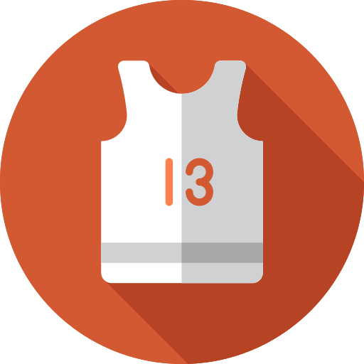

<div id="user-menu-wrapper">
  
  <!--<div id="search-wrapper">
    <md-input-container dividerColor="accent">
      <input mdInput placeholder="Search">
    </md-input-container>
    <button md-icon-button>
      <md-icon class="md-24">search</md-icon>
    </button>
  </div>-->
  <!--<button class="menu-button" md-button [routerLink]="['/']">Home</button>-->
  <button class="menu-button" md-button [routerLink]="['/myroutines']" (click)="onToggleSidenav()">My Routines</button>
  <button class="menu-button" md-button [routerLink]="['/myroutines']" (click)="onToggleSidenav()">My Favourite Routines</button>
  <button class="menu-button" md-button>Feedback</button>
  <button class="menu-button" md-button>Logout</button>
</div>